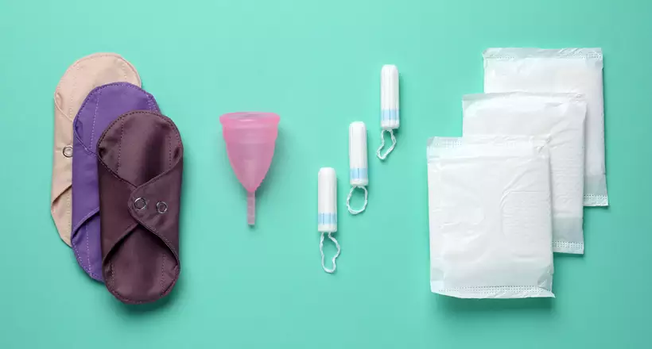

Acesso a Produtos Menstruais é um Direito
Produtos menstruais adequados são essenciais para a saúde, dignidade e participação plena na sociedade de todas as pessoas que menstruam.
O acesso universal a produtos menstruais envolve:
- Disponibilidade de diferentes tipos de produtos para diversas necessidades
- Preços acessíveis ou distribuição gratuita para quem não pode pagar
- Informação sobre como usar cada produto corretamente
- Infraestrutura adequada para o descarte ou higienização
Legislação Brasileira sobre Dignidade Menstrual
- Lei 14.214/2021 (Programa de Proteção à Saúde Menstrual): Distribuição gratuita de absorventes para estudantes de baixa renda, pessoas em situação de rua ou vulnerabilidade social.
- Lei Estadual (SP) 17.501/2021: Institui o Programa Estadual de Proteção à Saúde Menstrual no âmbito do estado de São Paulo.
- Lei Municipal (RJ) 6.897/2021: Garante acesso gratuito a absorventes higiênicos em escolas da rede pública municipal.
- Lei 14.214/2021: Isenção de impostos para absorventes higiênicos, tornando-os mais acessíveis.
Onde Conseguir Produtos Menstruais Gratuitamente
Escolas Públicas
Unidades participantes do Programa Saúde na Escola (PSE) distribuem absorventes gratuitamente.
Presente em mais de 90 mil escolas em todo o país
Unidades Básicas de Saúde
Postos de saúde em diversos municípios disponibilizam kits de higiene menstrual.
Procure a UBS mais próxima para informações
Organizações Sociais
ONGs como Girl Up, Absorvente Social e Dignidade Menstrual fazem distribuição regular.
Muitas oferecem também educação menstrual
CRAS e CREAS
Centros de Referência de Assistência Social distribuem para populações em vulnerabilidade.
Atendem famílias em situação de pobreza
Pontos de Coleta Comunitários
Muitas cidades possuem pontos de coleta onde você pode pegar absorventes gratuitamente ou doar para quem precisa. Alguns locais comuns:
- Estações de metrô (como em São Paulo e Rio de Janeiro)
- Bibliotecas públicas
- Centros comunitários
- Igrejas e templos religiosos
Impacto da Falta de Acesso
A pobreza menstrual afeta profundamente a vida de milhões de pessoas:
Educação
Meninas perdem até 45 dias de aula por ano por não terem absorventes, segundo a UNICEF.
Trabalho
Mulheres em situação de pobreza menstrual faltam ao trabalho ou usam materiais inadequados que podem vazar.
Saúde
Uso de materiais inapropriados como jornal ou miolo de pão pode causar infecções graves.
Autoestima
A impossibilidade de gerenciar adequadamente a menstruação afeta a autoconfiança e saúde mental.
Dados sobre Pobreza Menstrual no Brasil
- 28% das mulheres brasileiras já deixaram de ir à escola ou ao trabalho por não terem absorventes
- 22% das adolescentes entre 15-17 anos não têm acesso a produtos menstruais adequados
- Uma pessoa gasta em média R$ 300 por ano com absorventes descartáveis
- 4 milhões de estudantes não têm acesso a produtos menstruais nas escolas brasileiras
Como Garantir Acesso para Todos
1. Políticas Públicas
Defender leis que garantam distribuição gratuita em escolas, presídios, abrigos e para populações em vulnerabilidade social.
Você pode pressionar seus representantes políticos para ampliar essas políticas
2. Educação e Informação
Ensinar sobre todos os tipos de produtos disponíveis, seus prós e contras, para que cada pessoa possa escolher o que melhor se adapta.
Conheça seus direitos e compartilhe informações com outras pessoas
3. Iniciativas Comunitárias
Apoiar projetos que arrecadam e distribuem produtos menstruais, como pontos de coleta e campanhas de doação.
Você pode organizar uma campanha de arrecadação em seu bairro ou escola
Compartilhe sua experiência
Este espaço é para trocar informações sobre produtos menstruais e acesso a eles. Conte qual produto você usa e por quê!
Ana Claudia
Postado em 15/06/2023
Migrei para o coletor menstrual há 2 anos e foi a melhor decisão! Além de econômico, é muito mais confortável. No começo foi difícil aprender a colocar, mas hoje não troco por nada.
Maria Eduarda
Postado em 16/06/2023
Também uso coletor! Uma dica para iniciantes: existem vários tamanhos, é importante escolher o adequado para seu fluxo e idade.
Juliana Santos
Postado em 10/06/2023
Na minha comunidade temos um projeto de absorventes sustentáveis feitos com tecido doado. Ensinamos mulheres a costurar seus próprios absorventes reutilizáveis. Quem quiser saber mais pode me contactar!
Deixe seu comentário